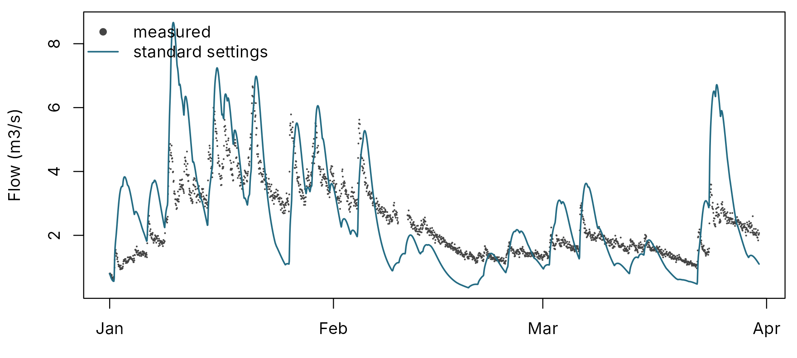
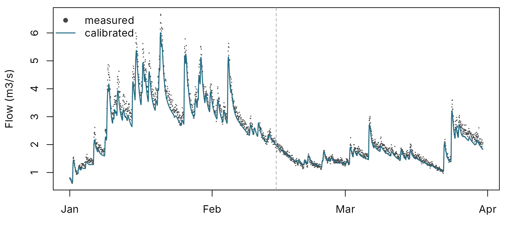

Your first model run
pdmS7 documentation
Source:vignettes/example-workflow.Rmd
example-workflow.RmdThis guide takes you from your own data files to a running, scored, saved model in about ten steps. It assumes you know some R, but nothing about pdmS7. For what the model does inside, read How the PDM works alongside.
1. What you need
Two files, one row per time step:
| File | Columns | Units |
|---|---|---|
| Forcing |
time, rain, pet
|
Rain and potential evaporation as totals per time step, in mm |
| Flow |
time, q_m3s
|
Measured river flow in m3/s; leave gaps empty |
Times should be in UTC, written like
2024-01-31T09:00:00Z or 2024-01-31 09:00, at a
fixed step: 15 minutes, an hour, a day. You also need the catchment area
in km2.
So that this guide runs anywhere, the next step makes example files. With your own data, skip it and point the paths at your files.
folder <- file.path(tempdir(), "my-catchment")
dir.create(folder, showWarnings = FALSE)
set.seed(21)
n <- 24 * 90
time <- seq(as.POSIXct("2024-01-01", tz = "UTC"), by = 3600, length.out = n)
rain <- ifelse(stats::runif(n) < 0.07, stats::rgamma(n, 0.7, scale = 3.5), 0)
truth <- pdm_presets("standard")
truth$area_km2 <- 64
truth$recharge$kg <- 250
truth$fc <- 1.1
truth$surface$k1 <- 3
truth$surface$k2 <- 8
flow <- run_pdm(pdm_from_config(truth), data.frame(rain = rain, pet = 0.06),
initial_state_from_flow(pdm_from_config(truth), 0.8, 0.7))$output$q_m3s
flow <- round(flow * exp(stats::rnorm(n, 0, 0.04)), 3)
flow[24 * 40 + 1:30] <- NA
stamp <- format(time, "%Y-%m-%dT%H:%M:%SZ")
data.table::fwrite(data.frame(time = stamp, rain = round(rain, 2), pet = 0.06),
file.path(folder, "forcing.csv"))
data.table::fwrite(data.frame(time = stamp, q_m3s = flow), file.path(folder, "flow.csv"))2. Read and check the data
forcing <- data.table::fread(file.path(folder, "forcing.csv"))
observed <- data.table::fread(file.path(folder, "flow.csv"))
forcing$time <- as.POSIXct(forcing$time, tz = "UTC")
head(forcing, 3)
#> time rain pet
#> <POSc> <num> <num>
#> 1: 2024-01-01 00:00:00 0 0.06
#> 2: 2024-01-01 01:00:00 0 0.06
#> 3: 2024-01-01 02:00:00 0 0.06
c(rows = nrow(forcing), same_length = nrow(forcing) == nrow(observed),
step_hours = as.numeric(diff(forcing$time[1:2]), units = "hours"),
missing_rain = sum(is.na(forcing$rain)), missing_flow = sum(is.na(observed$q_m3s)))
#> rows same_length step_hours missing_rain missing_flow
#> 2160 1 1 0 30Check four things before going further: the two files line up row for row; the time step is what you think; no rain or evaporation is missing (the model cannot run through a gap in its inputs, so fill or trim it); and how much flow is missing (gaps in flow are fine: they are simply left out of the scores).
3. Set up a model
Start from the standard PDM and give it your catchment’s area and time step:
config <- pdm_presets("standard")
config$area_km2 <- 64
config$dt <- 1 # time step in hours
str(config, max.level = 1)
#> List of 10
#> $ distribution:List of 4
#> $ recharge :List of 4
#> $ surface :List of 3
#> $ groundwater :List of 3
#> $ be : num 1
#> $ fc : num 1
#> $ td : num 0
#> $ qc : num 0
#> $ area_km2 : num 64
#> $ dt : num 1A configuration is a plain list. Each part is described in How the PDM works and Choosing model components;
parameter_catalog() lists every parameter with its
units.
model <- pdm_from_config(config)4. Choose a starting state
The model needs to know how wet the catchment is at the start. The simplest good choice is to start from the first measured flow, assuming the catchment is steady at that moment and that most of the flow is groundwater:
start <- initial_state_from_flow(model, observed_m3s = observed$q_m3s[1],
baseflow_fraction = 0.7)Starting a run explains the other options and why this matters.
5. Run it
result <- run_pdm(model, forcing, start)
simulated <- result$output
names(simulated)
#> [1] "time" "step" "rain_mm"
#> [4] "rain_corrected_mm" "pet_mm" "aet_mm"
#> [7] "aet_requested_mm" "recharge_mm" "recharge_requested_mm"
#> [10] "direct_runoff_mm" "surface_input_mm" "groundwater_input_mm"
#> [13] "surface_out_mm" "baseflow_out_mm" "q_natural_m3s"
#> [16] "q_m3s" "q_end_m3s" "qs_end_unlagged_mmh"
#> [19] "qb_end_unlagged_mmh" "soil_mm" "surface_mm"
#> [22] "groundwater_mm" "delay_mm" "saturated_fraction"
#> [25] "balance_error_mm"| Column | Meaning |
|---|---|
q_m3s |
Simulated river flow, mean over the time step |
soil_mm |
Water in the soil |
saturated_fraction |
Share of the catchment where rain runs straight off |
aet_mm |
Actual evaporation |
surface_out_mm, baseflow_out_mm
|
The fast and slow parts of the flow |
balance_error_mm |
Water-balance check; zero to rounding |
result$state holds the stores at the end, ready to carry
on from.
6. Look at it
plot_flow <- function(sim, label) {
par(mar = c(3, 4.2, 0.6, 0.6))
plot(forcing$time, observed$q_m3s, pch = 16, cex = 0.25, col = pal[5], xlab = "",
ylab = "Flow (m3/s)", ylim = range(c(observed$q_m3s, sim), na.rm = TRUE))
lines(forcing$time, sim, col = pal[1], lwd = 1.5)
legend("topleft", c("measured", label), col = c(pal[5], pal[1]), pch = c(16, NA),
lty = c(NA, 1), lwd = c(NA, 1.5), bty = "n")
}
plot_flow(simulated$q_m3s, "standard settings")
Measured (points) and simulated (line) flow with the standard settings.
7. Score it
Leave out the first two weeks, while the model’s stores settle, and score the rest:
scored <- (24 * 14 + 1):n
first <- pdm_scorecard(simulated$q_m3s[scored], observed$q_m3s[scored])
round(first[c("nse", "kge", "volume_error", "peak_error", "fdc_high", "fdc_low")], 3)
#> nse kge volume_error peak_error fdc_high fdc_low
#> 0.111 0.466 -0.014 0.087 0.189 -1.306NSE and KGE are 1 for a perfect fit, so 0.11 is poor. The total
volume is close (volume error -1 per cent), so the amount of water is
about right; the problem is how it is shared out over time. The
flow-duration scores fdc_high and fdc_low say
the floods and the low flows are both off, which points at how quickly
water drains to groundwater, and how quickly the surface stores empty.
Scoring a simulation explains every score and
what it points to.
8. Improve it
Let the computer adjust the settings the scores point to: the
drainage time constant kg, the two fast stores’ time
constants, and the rainfall factor fc for good measure. The
first half of the record is used to fit, and the second half is kept
back to check.
bounds <- calibration_bounds(config)
pick <- c("fc", "recharge.kg", "surface.k1", "surface.k2")
bounds <- bounds[bounds$path %in% pick, ]
fit <- calibrate_pdm(config, forcing[1:(24 * 45), ], observed$q_m3s[1:(24 * 45)],
lower = stats::setNames(bounds$lower, bounds$path),
upper = stats::setNames(bounds$upper, bounds$path),
warmup = 24 * 14, objective = "nse", starts = 3, seed = 1,
log_scale = c("recharge.kg", "surface.k1", "surface.k2"),
control = list(maxit = 60))
round(fit$parameters, 2)
#> fc recharge.kg surface.k1 surface.k2
#> 1.06 294.64 11.13 2.03
better <- run_pdm(fit$model, forcing, initial_state_from_flow(fit$model, observed$q_m3s[1], 0.7))
check <- (24 * 45 + 1):n
keep <- c("nse", "kge", "volume_error", "peak_error")
round(rbind(
standard = pdm_scorecard(simulated$q_m3s[check], observed$q_m3s[check])[keep],
calibrated = pdm_scorecard(better$output$q_m3s[check], observed$q_m3s[check])[keep]
), 3)
#> nse kge volume_error peak_error
#> standard -4.396 -0.983 0.022 0.870
#> calibrated 0.919 0.839 -0.042 -0.106
plot_flow(better$output$q_m3s, "calibrated")
abline(v = forcing$time[24 * 45], lty = 2, col = pal[7])
After calibration, on the whole record. The second half was not used to fit.
The scores in the table are on the second half only, which the calibration never saw: that is the honest measure of the improvement. Automatic calibration, explained covers the settings used here.
9. Save it
Save the configuration as a YAML file you can read, edit and share,
and the final state so the next run can carry on exactly where this one
stopped. Use write_pdm_config() rather than a general YAML
writer, which would round the calibrated values:
write_pdm_config(fit$config, file.path(folder, "my-catchment.yml"))
saveRDS(better$state, file.path(folder, "end-state.rds"))
again <- load_pdm_model(file.path(folder, "my-catchment.yml"))
identical(pdm_fingerprint(again), pdm_fingerprint(fit$model))
#> [1] TRUEThe fingerprint check confirms the model read back from the file is exactly the one that was calibrated.
10. Where next
| To | Read |
|---|---|
| Keep a reviewable record of a calibration, with sign-off | Logging a manual calibration |
| Calibrate many catchments the same way | Calibrating many catchments |
| Compare model structures | Choosing a model structure |
| Add snow |
How the snow model works, then
sim_snow_pdm()
|
| Use the model for forecasting | Forecast updating |
| Do all this without code | calibration_app() |